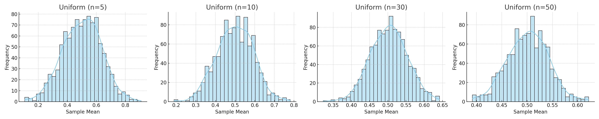
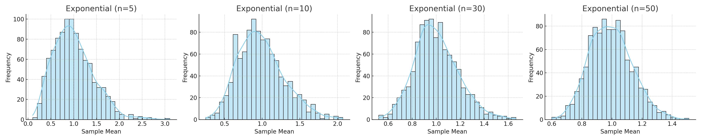
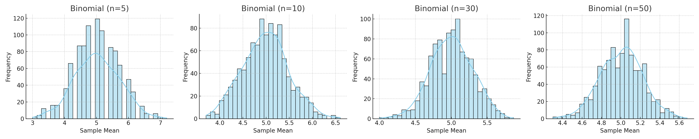

<!DOCTYPE html>

<html class="writer-html5" lang="en">
<head>
<meta charset="utf-8"/>
<meta content="IE=edge" http-equiv="X-UA-Compatible"/>
<meta content="width=device-width, initial-scale=1.0" name="viewport"/>
<link href="../../../img/favicon.ico" rel="shortcut icon"/>
<title>Problem 1: Exploring the Central Limit Theorem through Simulations - Physics and Mathematics</title>
<link href="../../../css/theme.css" rel="stylesheet"/>
<link href="../../../css/theme_extra.css" rel="stylesheet"/>
<link href="https://cdnjs.cloudflare.com/ajax/libs/highlight.js/11.8.0/styles/github.min.css" rel="stylesheet"/>
<script>
        // Current page data
        var mkdocs_page_name = "Problem 1: Exploring the Central Limit Theorem through Simulations";
        var mkdocs_page_input_path = "1 Physics/6 Statistics/Problem_1.md";
        var mkdocs_page_url = null;
      </script>
<!--[if lt IE 9]>
      <script src="../../../js/html5shiv.min.js"></script>
    <![endif]-->
<script src="https://cdnjs.cloudflare.com/ajax/libs/highlight.js/11.8.0/highlight.min.js"></script>
<script src="https://cdnjs.cloudflare.com/ajax/libs/highlight.js/11.8.0/languages/yaml.min.js"></script>
<script src="https://cdnjs.cloudflare.com/ajax/libs/highlight.js/11.8.0/languages/rust.min.js"></script>
<script src="https://cdnjs.cloudflare.com/ajax/libs/highlight.js/11.8.0/languages/python.min.js"></script>
<script>hljs.highlightAll();</script>
</head>
<body class="wy-body-for-nav" role="document">
<div class="wy-grid-for-nav">
<nav class="wy-nav-side stickynav" data-toggle="wy-nav-shift">
<div class="wy-side-scroll">
<div class="wy-side-nav-search">
<a class="icon icon-home" href="../../.."> Physics and Mathematics
        </a><div role="search">
<form action="../../../search.html" class="wy-form" id="rtd-search-form" method="get">
<input aria-label="Search docs" name="q" placeholder="Search docs" title="Type search term here" type="text"/>
</form>
</div>
</div>
<div aria-label="Navigation menu" class="wy-menu wy-menu-vertical" data-spy="affix" role="navigation">
<ul>
<li class="toctree-l1"><a class="reference internal" href="../../..">Introduction</a>
</li>
</ul>
<p class="caption"><span class="caption-text">1 Physics</span></p>
<ul class="current">
<li class="toctree-l1"><a class="reference internal">1 Mechanics</a>
<ul>
<li class="toctree-l2"><a class="reference internal" href="../../1%20Mechanics/Problem_1/">Problem 1</a>
</li>
<li class="toctree-l2"><a class="reference internal" href="../../1%20Mechanics/Problem_2/">Problem 2</a>
</li>
</ul>
</li>
<li class="toctree-l1"><a class="reference internal">2 Gravity</a>
<ul>
<li class="toctree-l2"><a class="reference internal" href="../../2%20Gravity/Problem_1/">Problem 1</a>
</li>
<li class="toctree-l2"><a class="reference internal" href="../../2%20Gravity/Problem_2/">Problem 2</a>
</li>
<li class="toctree-l2"><a class="reference internal" href="../../2%20Gravity/Problem_3/">Problem 3</a>
</li>
</ul>
</li>
<li class="toctree-l1"><a class="reference internal">3 Waves</a>
<ul>
<li class="toctree-l2"><a class="reference internal" href="../../3%20Waves/Problem_1/">Problem 1</a>
</li>
</ul>
</li>
<li class="toctree-l1"><a class="reference internal">4 Electromagnetism</a>
<ul>
<li class="toctree-l2"><a class="reference internal" href="../../4%20Electromagnetism/Problem_1/">Problem 1: Simulating the Effects of the Lorentz Force</a>
</li>
</ul>
</li>
<li class="toctree-l1"><a class="reference internal">5 Circuits</a>
<ul>
<li class="toctree-l2"><a class="reference internal" href="../../5%20Circuits/Problem_1/">Problem 1: Equivalent Resistance Using Graph Theory</a>
</li>
</ul>
</li>
<li class="toctree-l1 current"><a class="reference internal current">6 Statistics</a>
<ul class="current">
<li class="toctree-l2 current"><a class="reference internal current" href="#">Problem 1: Exploring the Central Limit Theorem through Simulations</a>
<ul class="current">
<li class="toctree-l3"><a class="reference internal" href="#motivation">Motivation</a>
</li>
<li class="toctree-l3"><a class="reference internal" href="#1-simulating-sampling-distributions">1. Simulating Sampling Distributions</a>
</li>
<li class="toctree-l3"><a class="reference internal" href="#2-sampling-and-visualization">2. Sampling and Visualization</a>
<ul>
<li class="toctree-l4"><a class="reference internal" href="#uniform-distribution">Uniform Distribution</a>
</li>
<li class="toctree-l4"><a class="reference internal" href="#exponential-distribution">Exponential Distribution</a>
</li>
<li class="toctree-l4"><a class="reference internal" href="#binomial-distribution">Binomial Distribution</a>
</li>
</ul>
</li>
<li class="toctree-l3"><a class="reference internal" href="#3-parameter-exploration">3. Parameter Exploration</a>
</li>
<li class="toctree-l3"><a class="reference internal" href="#4-practical-applications">4. Practical Applications</a>
</li>
<li class="toctree-l3"><a class="reference internal" href="#5-conclusion">5. Conclusion</a>
</li>
</ul>
</li>
<li class="toctree-l2"><a class="reference internal" href="../Problem_2/">Problem 2</a>
</li>
</ul>
</li>
<li class="toctree-l1"><a class="reference internal">7 Measurements</a>
<ul>
<li class="toctree-l2"><a class="reference internal" href="../../7%20Measurements/Problem_1/">Problem 1</a>
</li>
</ul>
</li>
</ul>
<p class="caption"><span class="caption-text">2 Mathematics</span></p>
<ul>
<li class="toctree-l1"><a class="reference internal" href="../../../2%20Mathematics/1%20Linear_algebra/">Linear Algebra</a>
</li>
<li class="toctree-l1"><a class="reference internal" href="../../../2%20Mathematics/2%20Analytic_geometry/">Analytic geometry</a>
</li>
<li class="toctree-l1"><a class="reference internal" href="../../../2%20Mathematics/3%20Calculus/">Calculus</a>
</li>
</ul>
<p class="caption"><span class="caption-text">3 Discret Mathematics</span></p>
<ul>
<li class="toctree-l1"><a class="reference internal">1 Set Theory and ...</a>
<ul>
<li class="toctree-l2"><a class="reference internal" href="../../../3%20Discret_Mathematics/1%20Set%20Theory%20and%20.../_02%20Set_Theory/">Set Theory</a>
</li>
<li class="toctree-l2"><a class="reference internal" href="../../../3%20Discret_Mathematics/1%20Set%20Theory%20and%20.../_03%20Relations/">Relations</a>
</li>
<li class="toctree-l2"><a class="reference internal" href="../../../3%20Discret_Mathematics/1%20Set%20Theory%20and%20.../_04%20Functions/">Functions</a>
</li>
</ul>
</li>
<li class="toctree-l1"><a class="reference internal">2 Number Theory and ...</a>
<ul>
<li class="toctree-l2"><a class="reference internal" href="../../../3%20Discret_Mathematics/2%20Number%20Theory%20and%20.../_05%20Combinatorics/">Combinatorics</a>
</li>
<li class="toctree-l2"><a class="reference internal" href="../../../3%20Discret_Mathematics/2%20Number%20Theory%20and%20.../_08%20Number_Theory/">Number Theory</a>
</li>
</ul>
</li>
<li class="toctree-l1"><a class="reference internal">3 Recurrence and ...</a>
<ul>
<li class="toctree-l2"><a class="reference internal" href="../../../3%20Discret_Mathematics/3%20Recurrence%20and%20.../_06%20Sequences_and_Series/">Sequences and Series</a>
</li>
<li class="toctree-l2"><a class="reference internal" href="../../../3%20Discret_Mathematics/3%20Recurrence%20and%20.../_07%20Induction/">Induction</a>
</li>
<li class="toctree-l2"><a class="reference internal" href="../../../3%20Discret_Mathematics/3%20Recurrence%20and%20.../_09%20Recurrence/">Recurrence</a>
</li>
</ul>
</li>
<li class="toctree-l1"><a class="reference internal">4 Graph Theory and ...</a>
<ul>
<li class="toctree-l2"><a class="reference internal" href="../../../3%20Discret_Mathematics/4%20Graph%20Theory%20and%20.../_10%20Graph_Theory/">Graph Theory</a>
</li>
</ul>
</li>
<li class="toctree-l1"><a class="reference internal">5 Logic</a>
<ul>
<li class="toctree-l2"><a class="reference internal" href="../../../3%20Discret_Mathematics/5%20Logic/_01%20Logic/">Logic</a>
</li>
</ul>
</li>
</ul>
</div>
</div>
</nav>
<section class="wy-nav-content-wrap" data-toggle="wy-nav-shift">
<nav aria-label="Mobile navigation menu" class="wy-nav-top" role="navigation">
<i class="fa fa-bars" data-toggle="wy-nav-top"></i>
<a href="../../..">Physics and Mathematics</a>
</nav>
<div class="wy-nav-content">
<div class="rst-content"><div aria-label="breadcrumbs navigation" role="navigation">
<ul class="wy-breadcrumbs">
<li><a aria-label="Docs" class="icon icon-home" href="../../.."></a></li>
<li class="breadcrumb-item">1 Physics</li>
<li class="breadcrumb-item">6 Statistics</li>
<li class="breadcrumb-item active">Problem 1: Exploring the Central Limit Theorem through Simulations</li>
<li class="wy-breadcrumbs-aside">
</li>
</ul>
<hr/>
</div>
<div class="document" itemscope="itemscope" itemtype="http://schema.org/Article" role="main">
<div class="section" itemprop="articleBody">
<h1 id="problem-1-exploring-the-central-limit-theorem-through-simulations">Problem 1: Exploring the Central Limit Theorem through Simulations</h1>
<hr/>
<h2 id="motivation">Motivation</h2>
<p>The <strong>Central Limit Theorem (CLT)</strong> is one of the most powerful and widely used results in probability theory. It states:</p>
<blockquote>
<p>"Regardless of the shape of the population distribution, the distribution of the sample mean will approach a normal distribution as the sample size increases, provided the samples are independent and identically distributed."</p>
</blockquote>
<p>Simulations allow us to observe this theoretical principle in action. We will analyze how different initial distributions (e.g., Uniform, Exponential, Binomial) behave when repeatedly sampled and their sample means analyzed.</p>
<hr/>
<h2 id="1-simulating-sampling-distributions">1. Simulating Sampling Distributions</h2>
<p>We select three population distributions:</p>
<table>
<thead>
<tr>
<th>Distribution Type</th>
<th>Parameters</th>
</tr>
</thead>
<tbody>
<tr>
<td>Uniform</td>
<td>low = 0, high = 1</td>
</tr>
<tr>
<td>Exponential</td>
<td>λ = 1</td>
</tr>
<tr>
<td>Binomial</td>
<td>n = 10, p = 0.5</td>
</tr>
</tbody>
</table>
<p>For each distribution:
- A <strong>population</strong> of 100,000 data points is generated.
- From this population, we draw random samples of sizes: <strong>5, 10, 30, 50</strong>.
- For each sample size, <strong>1000 samples</strong> are drawn, and their <strong>means</strong> are recorded.</p>
<hr/>
<h2 id="2-sampling-and-visualization">2. Sampling and Visualization</h2>
<p>The histograms below illustrate how the <strong>distribution of sample means</strong> changes as the sample size increases.</p>
<h3 id="uniform-distribution">Uniform Distribution</h3>
<ul>
<li><strong>Population shape</strong>: Flat.</li>
<li><strong>CLT effect</strong>: Gradual convergence to normal shape.</li>
</ul>
<p></p>
<hr/>
<h3 id="exponential-distribution">Exponential Distribution</h3>
<ul>
<li><strong>Population shape</strong>: Right-skewed.</li>
<li><strong>CLT effect</strong>: Fast convergence due to infinite support.</li>
</ul>
<p></p>
<hr/>
<h3 id="binomial-distribution">Binomial Distribution</h3>
<ul>
<li><strong>Population shape</strong>: Discrete, symmetric at p = 0.5.</li>
<li><strong>CLT effect</strong>: Becomes smoother with larger samples.</li>
</ul>
<p></p>
<hr/>
<h2 id="3-parameter-exploration">3. Parameter Exploration</h2>
<p>The rate at which the sample means converge to normality depends on:</p>
<ul>
<li><strong>Original distribution shape</strong>:</li>
<li>Strongly skewed distributions (like exponential) take longer.</li>
<li>
<p>Symmetric distributions (like binomial with p=0.5) converge faster.</p>
</li>
<li>
<p><strong>Sample size (n)</strong>:</p>
</li>
<li>
<p>As <span class="arithmatex">\( n 
ightarrow \infty \)</span>, the variance of the sample mean becomes:
  [
    ext{Var}(ar{X}) = \frac{\sigma^2}{n}
  ]</p>
</li>
<li>
<p><strong>Population variance (σ²)</strong>:</p>
</li>
<li>Higher population variance leads to wider sampling distributions.</li>
</ul>
<hr/>
<h2 id="4-practical-applications">4. Practical Applications</h2>
<p>The CLT has broad applications:</p>
<table>
<thead>
<tr>
<th>Domain</th>
<th>Application</th>
</tr>
</thead>
<tbody>
<tr>
<td><strong>Manufacturing</strong></td>
<td>Quality control and defect rate estimation</td>
</tr>
<tr>
<td><strong>Finance</strong></td>
<td>Risk modeling and portfolio prediction</td>
</tr>
<tr>
<td><strong>Healthcare</strong></td>
<td>Estimating treatment effects in clinical trials</td>
</tr>
<tr>
<td><strong>Survey Research</strong></td>
<td>Polling and inference about populations</td>
</tr>
</tbody>
</table>
<hr/>
<h2 id="5-conclusion">5. Conclusion</h2>
<p>The Central Limit Theorem allows us to apply the powerful framework of normal distributions to problems where the underlying distribution is unknown or non-normal. Through simulation, we visually confirm:</p>
<ul>
<li>The <strong>universal behavior</strong> of the sampling mean distribution.</li>
<li>The <strong>reduction in spread</strong> with increasing sample size.</li>
<li>The <strong>approach to Gaussian symmetry</strong> as predicted by theory.</li>
</ul>
<p>Understanding CLT bridges the gap between probability theory and statistical inference, empowering data-driven decision-making across all fields of science.</p>
<hr/>
</div>
</div><footer>
<div aria-label="Footer Navigation" class="rst-footer-buttons" role="navigation">
<a class="btn btn-neutral float-left" href="../../5%20Circuits/Problem_1/" title="Problem 1: Equivalent Resistance Using Graph Theory"><span class="icon icon-circle-arrow-left"></span> Previous</a>
<a class="btn btn-neutral float-right" href="../Problem_2/" title="Problem 2">Next <span class="icon icon-circle-arrow-right"></span></a>
</div>
<hr/>
<div role="contentinfo">
<!-- Copyright etc -->
</div>

  Built with <a href="https://www.mkdocs.org/">MkDocs</a> using a <a href="https://github.com/readthedocs/sphinx_rtd_theme">theme</a> provided by <a href="https://readthedocs.org">Read the Docs</a>.
</footer>
</div>
</div>
</section>
</div>
<div aria-label="Versions" class="rst-versions" role="note">
<span class="rst-current-version" data-toggle="rst-current-version">
<span><a href="../../5%20Circuits/Problem_1/" style="color: #fcfcfc">« Previous</a></span>
<span><a href="../Problem_2/" style="color: #fcfcfc">Next »</a></span>
</span>
</div>
<script src="../../../js/jquery-3.6.0.min.js"></script>
<script>var base_url = "../../..";</script>
<script src="../../../js/theme_extra.js"></script>
<script src="../../../js/theme.js"></script>
<script src="https://cdn.jsdelivr.net/npm/mathjax@3/es5/tex-mml-chtml.js"></script>
<script src="https://cdn.jsdelivr.net/npm/mermaid@10/dist/mermaid.min.js"></script>
<script src="../../../search/main.js"></script>
<script>
        jQuery(function () {
            SphinxRtdTheme.Navigation.enable(true);
        });
    </script>
</body>
</html>
